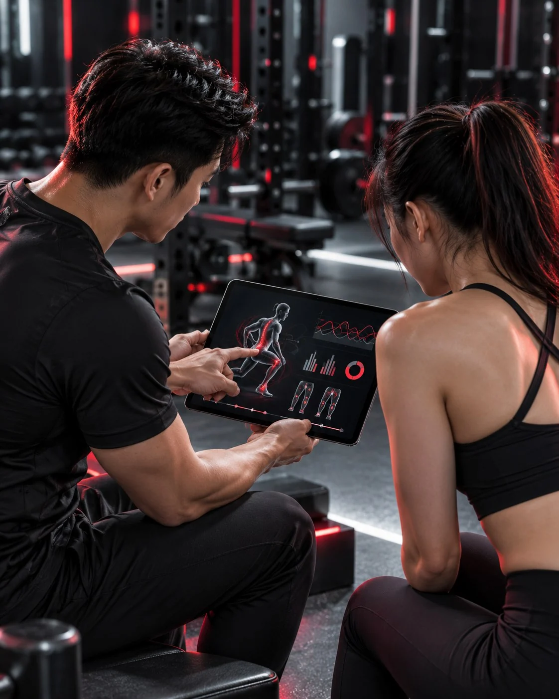

Lộ trình phục hồi cá nhân hóa bắt đầu từ mục tiêu thật của bạn
Một nhân viên văn phòng muốn trở lại chạy 5 km và một vận động viên phong trào cần quay lại thi đấu sẽ không dùng cùng một ngưỡng tải. MOVE+ điều chỉnh bài tập theo yêu cầu vận động, lịch sinh hoạt và phản ứng của từng người.
Chọn lịch đánh giáMục tiêu cụ thể
Xác định hoạt động bạn cần quay lại thay vì chỉ đặt mục tiêu chung là hết đau.
Bài tập có lý do
Mỗi bài tập gắn với một hạn chế được phát hiện trong đánh giá hoặc một yêu cầu của giai đoạn tiếp theo.
Điều chỉnh theo phản hồi
Tải tập được cập nhật dựa trên triệu chứng, khả năng hoàn thành bài và dữ liệu tái đánh giá.